Fase 2
Secador de cabelo
[Resumo do que foi feito nesta fase.]
4etapas de trabalho
22vistas de modelação
4grupos de peças
2vistas da montagem final
Porquê este objeto?
Processo
Estratégia
Resultados
Montagem Final
Renders
Principais desafios
Conclusões
Porquê este objeto?


[Razões da escolha: complexidade, geometrias, competências do grupo.]
[Que geometrias e componentes do objeto permitiram explorar diferentes ferramentas de modelação.]
Processo
- [Passo 1]
[Descrição do passo.]
- [Passo 2]
[Descrição do passo.]
- [Passo 3]
[Descrição do passo.]
- [Passo 4]
[Descrição do passo.]
Estratégia de modelação
[Ferramentas de CAD usadas, forma de modelar as peças e como foram resolvidos os encaixes.]
Resultados
Componentes e vistas modelados nesta fase.
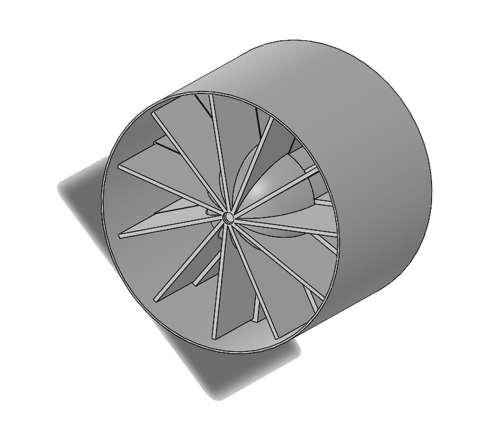
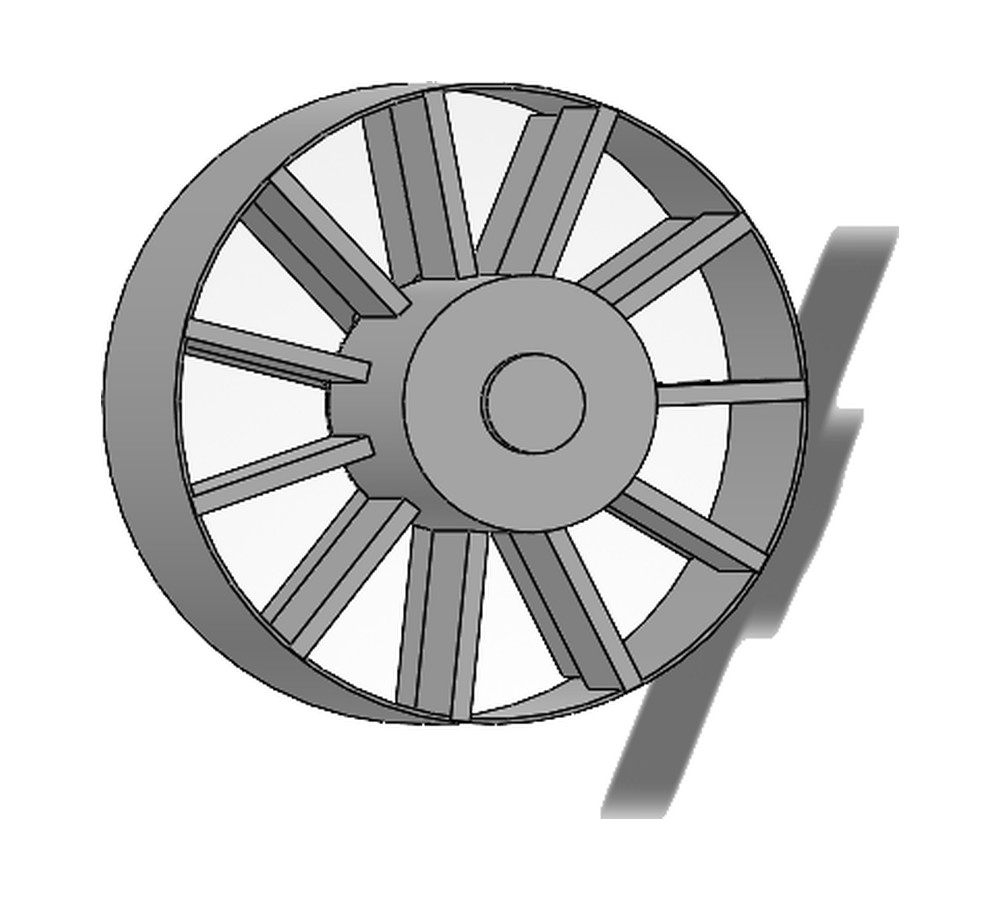

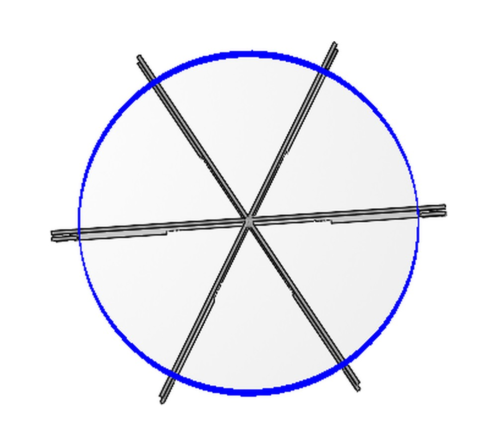

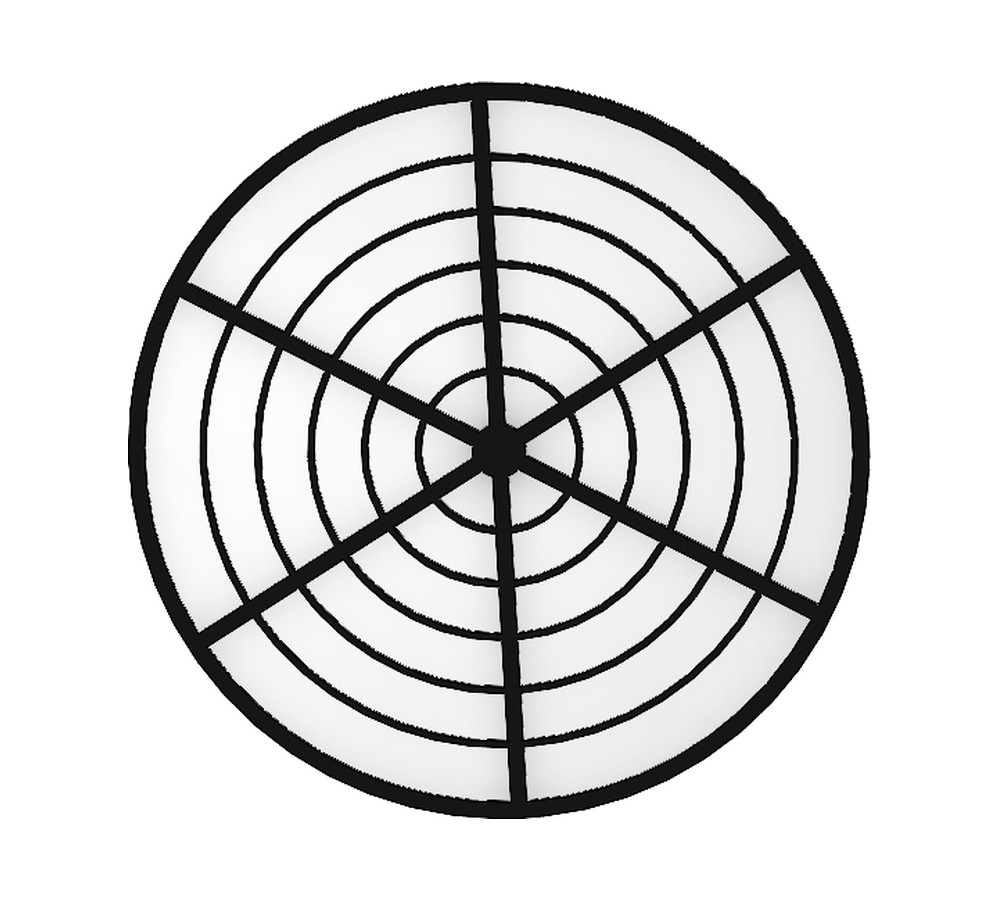
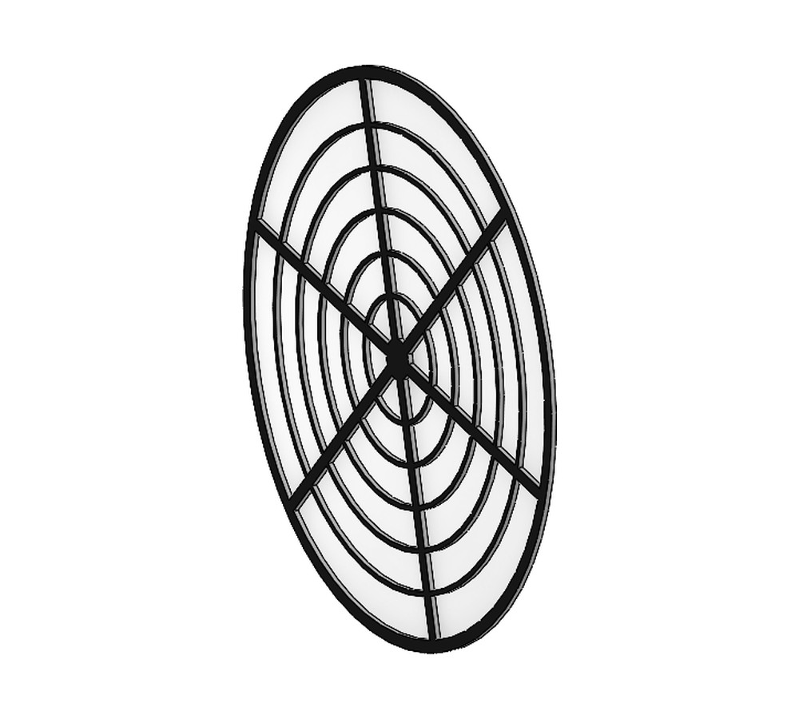


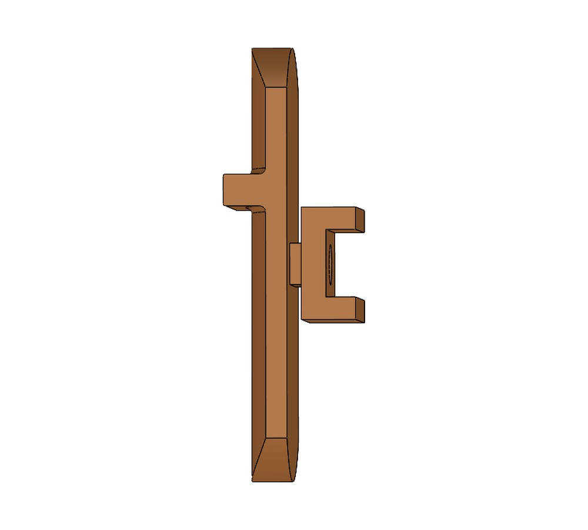
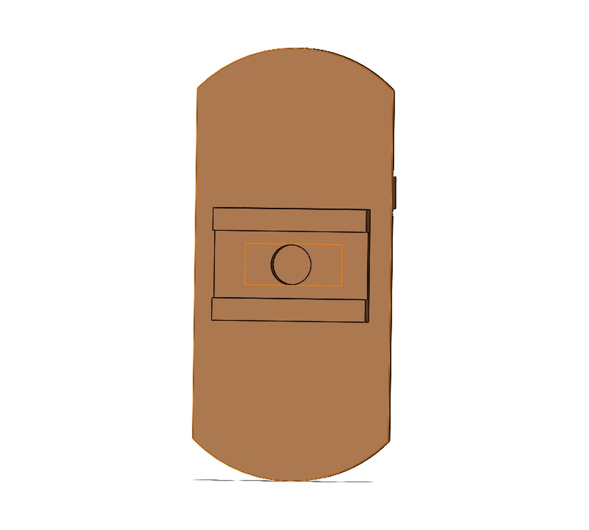


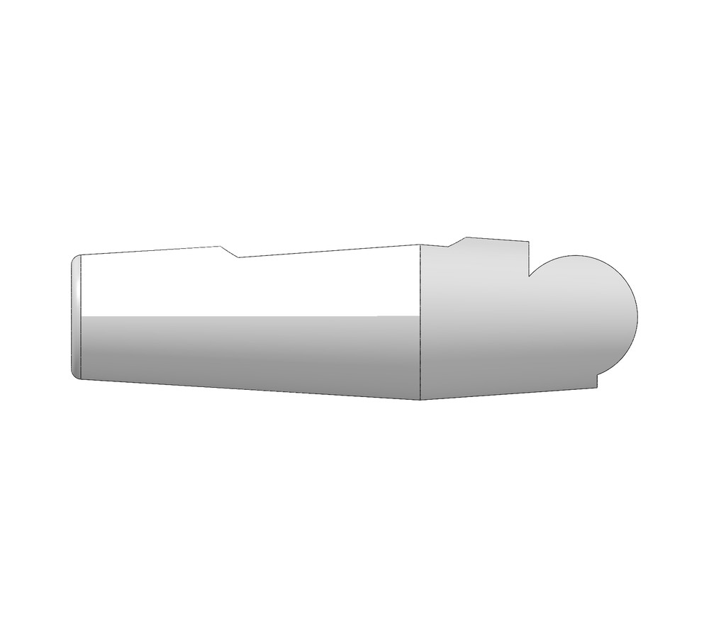
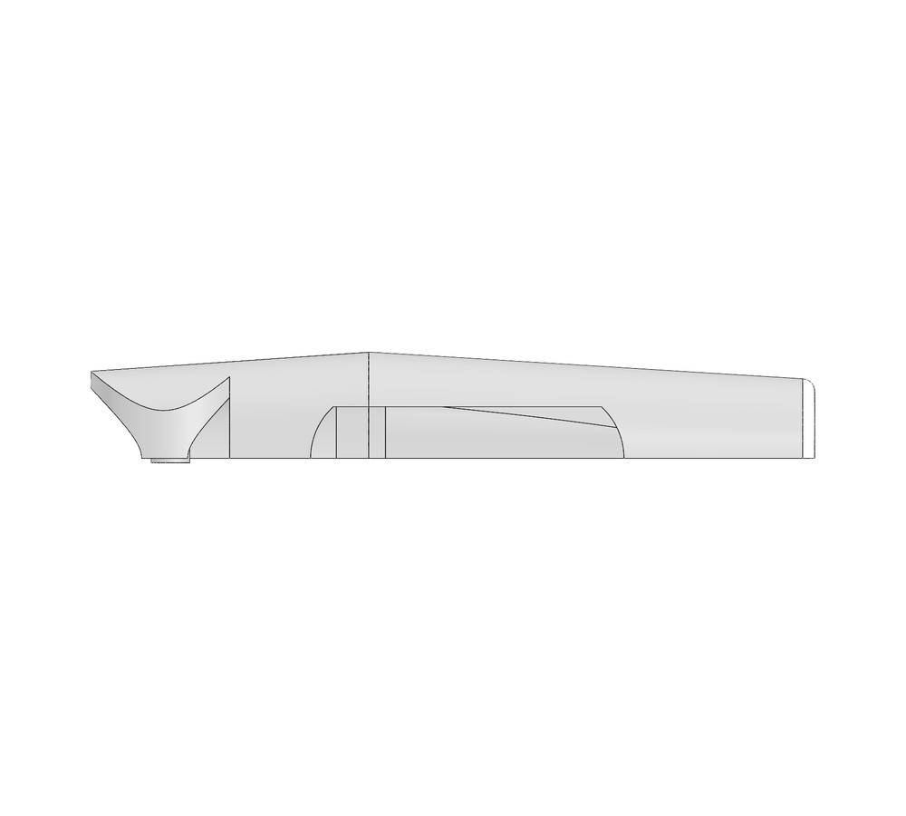
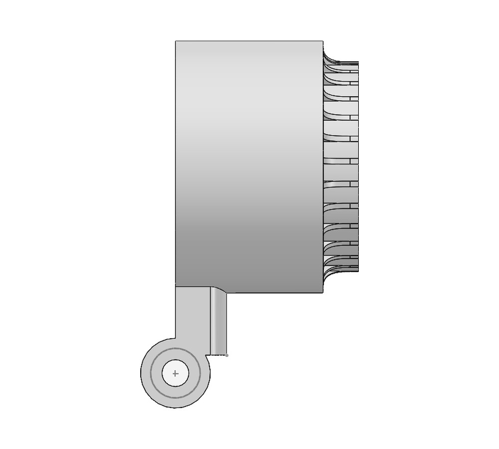

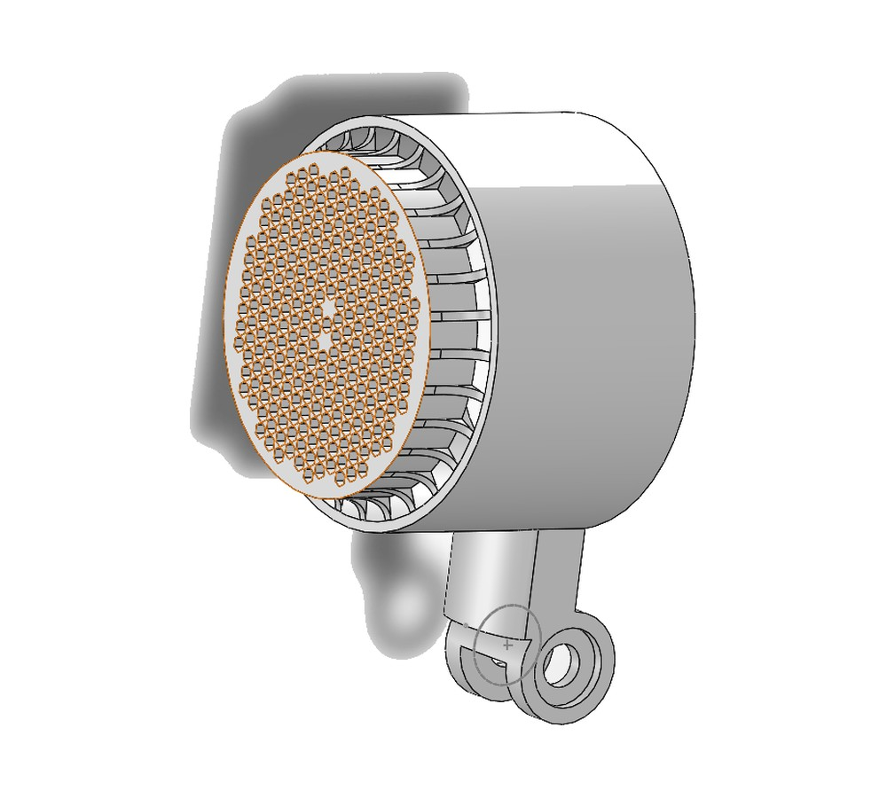


Montagem Final


Renders
Render 1
Render 2
Principais desafios
[Dificuldades encontradas e como foram resolvidas.]
Conclusões
[O que o grupo aprendeu e o que faria de forma diferente.]